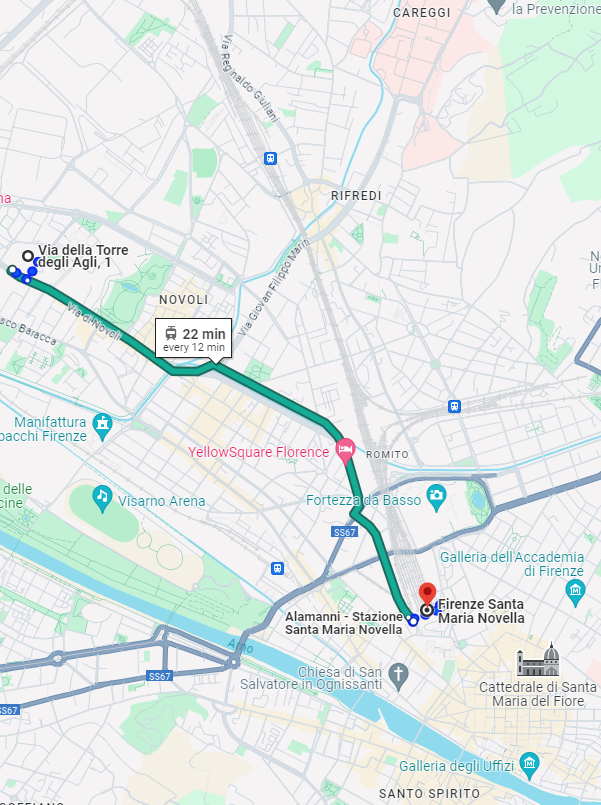
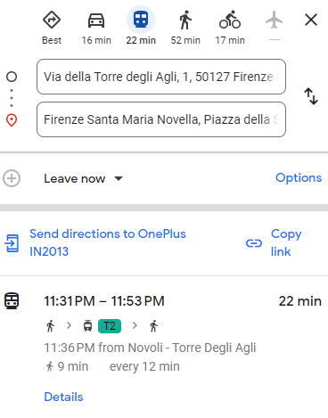

Cómo llegar
A continuación, encontrarás información sobre cómo llegar al apartamento. Visita la sección de Transporte público para obtener información sobre cómo moverte y llegar al centro histórico.
Notas
- El apartamento está a 2 minutos a pie de la parada del tranvía Novoli - Torre degli Agli, que se encuentra en la línea del Tranvía T2 que conecta el aeropuerto de Florencia con el centro de la ciudad y con la estación de tren Santa Maria Novella.
- 8 minutos al aeropuerto.
- 19 minutos a la estación de tren Santa Maria Novella.
- 19 minutos al centro de la ciudad.
Desde el aeropuerto de Florencia
- Toma el Tranvía T2 desde la parada Peretola Aeroporto justo afuera del Aeropuerto Amerigo Vespucci y dirígete hacia Unità. Baja en Novoli - Torre degli Agli. El trayecto dura 10 minutos, con tranvías cada 6 minutos. Desde la parada del tranvía, hay 2 minutos a pie hasta el apartamento en Via della Torre degli Agli, 8.


Desde la estación Santa Maria Novella
- Desde la parada Unità, cerca de la estación de tren Santa Maria Novella, toma el Tranvía T2 y baja en la parada Novoli - Torre degli Agli. El trayecto dura aproximadamente 19 minutos, con tranvías cada 6 minutos. Desde la parada, hay 2 minutos a pie hasta el apartamento en Via della Torre degli Agli, 8.  

Desde el aeropuerto de Pisa
- Desde el aeropuerto de Pisa, toma el Pisa Mover hacia la estación Pisa Centrale. Una vez allí, toma un tren hacia la estación Firenze Santa Maria Novella. El trayecto en tren dura aproximadamente 1 hora y 15 minutos.
- Alternativamente, puedes tomar un autobús directo desde el aeropuerto hasta la estación central de autobuses en Florencia, que está cerca de Santa Maria Novella. El trayecto en autobús dura aproximadamente 1 hora y 45 minutos.
- Una vez en Florencia, toma la línea del Tranvía T2 y baja en Novoli - Torre degli Agli. El trayecto dura 10 minutos, con tranvías cada 6 minutos. Desde la parada, hay 2 minutos a pie hasta el apartamento en Via della Torre degli Agli, 8.
En coche
- Hay aparcamiento público gratuito y de pago disponible en Via della Torre degli Agli y calles cercanas. Ten en cuenta que el estacionamiento está sujeto a disponibilidad y puede ser limitado durante las horas punta. Siempre verifica las restricciones o señales. Por lo general, puedes encontrar aparcamiento en la plaza frente a Via della Torre degli Agli, 1.